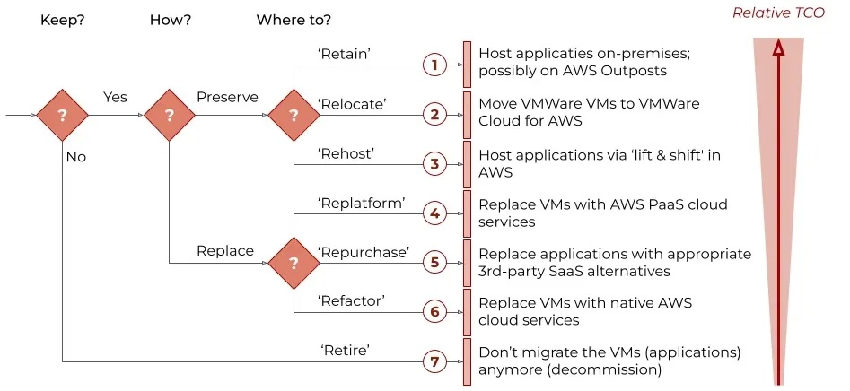

AWS Cloud Migration Frameworks & Strategies
Moving enterprise workloads to the cloud requires an optimized, structured methodology. Discover the core mechanics of mass migrations, the foundational execution phases, and how to align application architectures with AWS target operating models.
The Strategies: Formulating Your Workload Blueprint
An explicit AWS migration strategy dictates the lifecycle, resource expenditure, and target design of every single application inside an enterprise IT portfolio. Depending on corporate timeline constraints and the technical debt of individual workloads, organizations evaluate applications against the classic 6 Rs of Migration Strategies, which has expanded into the 7 Rs Framework to account for cloud-native infrastructure platforms.
The 6 Rs of Migration Strategies Framework

The Application Migration Classifications
1. Rehost ("Lift and Shift")
Moving workloads directly from on-premises target systems to instances in the cloud with zero structural code alterations. This is optimal for rapid mass data center evacuations where speed out-prioritizes immediate modernization benefits.
2. Replatform ("Lift, Tinker, and Shift")
Introducing minimal backend optimizations to secure direct cloud advantages without modifying the application core. A typical use case includes dropping an on-premises relational database layout onto a fully managed engine like Amazon RDS.
3. Relocate (The 7th R)
Transferring production hypervisor profiles or instances directly to cloud versions of the infrastructure (such as VMware Cloud on AWS) or moving active AWS services seamlessly between localized VPC environments and distinct accounts without structural architecture modifications.
4. Refactor / Re-architect
Reimagining and redesigning application logic using cloud-native microservices, serverless components, and container fabrics. This approach unlocks maximum elasticity and scaling capacity, though it presents the highest operational complexity.
5. Repurchase ("Drop and Shop")
Abandoning the existing custom configuration or proprietary legacy model to transition to a standardized Software-as-a-Service (SaaS) engine or an equivalent turnkey offering sourced through the AWS Marketplace.
6. Retire
Decommissioning underutilized, idle, or completely obsolete asset configurations (often identified via tracking infrastructure as "zombie applications" with minimal CPU or inbound connectivity metrics over a 90-day window) to clean up infrastructure footprints.
7. Retain
Keeping dependencies right where they are in the source environment. This strategy applies when complex security constraints, unresolved localized hardware connections, or significant investments require postponing cloud deployment for a later phase.
Moving Workloads to AWS via the 7 Rs

The Three Phases of Migration Execution
To mitigate operational risk, control running expenses, and successfully scale deployment engines, AWS structures the engineering journey across three iterative lifecycle components:
- Phase 1 Assess: Deeply inspect the baseline operational health and cloud readiness of the enterprise. This block focuses on mapping potential financial cases, evaluating key stakeholders, and formalizing a directional return on investment (ROI).
- Phase 2 Mobilize: Building actionable migration workstreams while fixing early engineering skill gaps. Teams deploy secure, automated multi-account baselines called "landing zones" via tools like AWS Control Tower, while organizing application portfolio architectures into logical execution groups.
- Phase 3 Migrate & Modernize: Migrating applications incrementally through sequential waves. Teams run parallel deployments to validate operational integrity, switch over active traffic, and continuously optimize resource consumption post-migration.
Deep Dive: A Process for Mass Migrations to the Cloud
Mass migration is fundamentally an evolution of organizational workflows and engineering habits. As the industry notes, managing this lifecycle is a systematic journey:
“We cannot and should not stop people from migration. We have to give them a better life at home. Migration is a process not a problem.”
— William Lacy Swing
To move an entire enterprise IT portfolio smoothly without stalling out, cloud leaders rely on a 5-Phase Migration Process that structures broad goals into predictable, manageable technical sequences.
The 5-Phase Migration Lifecycle Breakdown
Phase 1: Opportunity Evaluation
Every sustainable migration needs a compelling driver or clear corporate business case to unify the organization. While early moves were sometimes executed on instinct, modern mass migrations align with measurable triggers: hardware lease expirations, real estate consolidated from data center closures, globalization needs, M&A integrations, or a mandate for unified, automated architectures.
For instance, top-tier enterprises often map their business cases directly to developer productivity. Moving to managed cloud infrastructures can eliminate infrastructure provisioning wait times, expanding overall development capacity to focus heavily on net-new feature growth rather than server upkeep. Regardless of the driver, setting definitive, aggressive objectives prevents migration stalls.
Phase 2: Portfolio Discovery and Planning
This phase requires mapping out your internal assets, discovering complex interdependencies, and choosing what to move first. Teams utilize automated discovery tools alongside system configuration management databases (CMDBs) to audit network layers and host architectures.
Workloads exist on a spectrum of complexity—ranging from standard, low-complexity virtualized services to monolithic mainframes. Beginning with low-complexity applications provides rapid "quick wins" and builds operational confidence. Because complex legacy systems lack a magic button for immediate migration, teams typically lean toward automated rehosting for modernized virtual applications, while scheduling deep refactoring for monolithic systems.
Phase 3 & 4: Designing, Migrating, and Validating Applications
At this stage, operations shift from bird's-eye portfolio planning to an execution-focused "migration factory." Applications are handled one by one, moving through tailored waves based on their designated strategy (the 6 Rs / 7 Rs).
Emphasize a philosophy of continuous iteration. Establish dedicated, agile teams organized around cohesive "migration themes"—such as specialized groups for specific business units, web frontends, or common database backends. This specialization helps teams spot patterns and scale up the factory's output. A central Cloud Center of Excellence (CCoE) provides governance and guardrails throughout this phase, while business owners validate live traffic routing and performance before old environments are safely decommissioned.
Phase 5: Modern Operating Model
As workloads transition to live cloud environments, the migration acts as a catalyst for cultural evolution. The target operating model should be treated as an evergreen ecosystem of people, processes, and technology that refines itself with every application migrated. You do not need to solve for every hypothetical operational edge-case on day one. Instead, use early validation waves to lay the foundation, and allow your DevOps and cloud-native practices to mature naturally as your migration factory gathers momentum.
Funding, Governance, and Isolation Scenarios
The AWS Migration Acceleration Program (MAP)
To offset initial migration costs and accelerate your timeline, AWS provides the Migration Acceleration Program (MAP). MAP delivers an outcome-driven architecture, structured training modules, automated tooling mechanisms, and targeted financial investments to lower double-headed hosting costs during the transition phases.
Enterprise Isolation & Complex Divestitures
During corporate transitions, spin-offs, or divestitures, building legally isolated and distinct cloud environments is critical. For practical, field-tested guidance on navigating complex infrastructure splits and managing multi-account isolation strategies under strict timelines, refer to the enterprise architecture blueprints below.
Official References & Primary Literature
To view the foundational source material and engineering frameworks cited across this guide, consult the following resources:
-
Stephen Orban (Author) – A Process for Mass Migrations to the Cloud (AWS Enterprise Strategy Series).
Source Context: Mass Migration Introduction (Part 1) | 6 Strategies for Migration Lifecycle (Part 3) -
Jonathan Allen (Enterprise Strategist, AWS) – Understanding the 7 Rs Cloud Migration Strategies.
Source Framework: AWS Builder Migration Blueprint -
AWS Prescriptive Guidance Documentation – Decommissioning and Retiring Assets.
Technical Guide: Assessing Applications to be Retired -
AWS Migration Acceleration Program (MAP) – Program Details and Funding Mechanics.
Program Page: AWS MAP Portal -
Production Scenario Video Resource – AWS Cloud Migration Specialist: 92 Brutal, Field-Tested "AWS Cloud Migration" Production Scenarios!
Video Reference: Watch Production Field Scenarios on YouTube